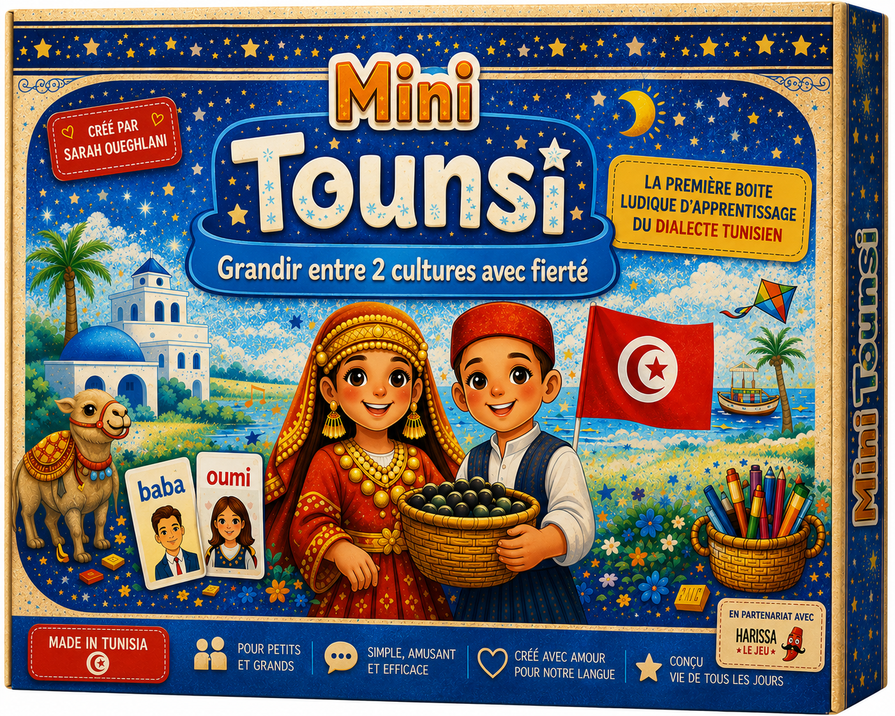
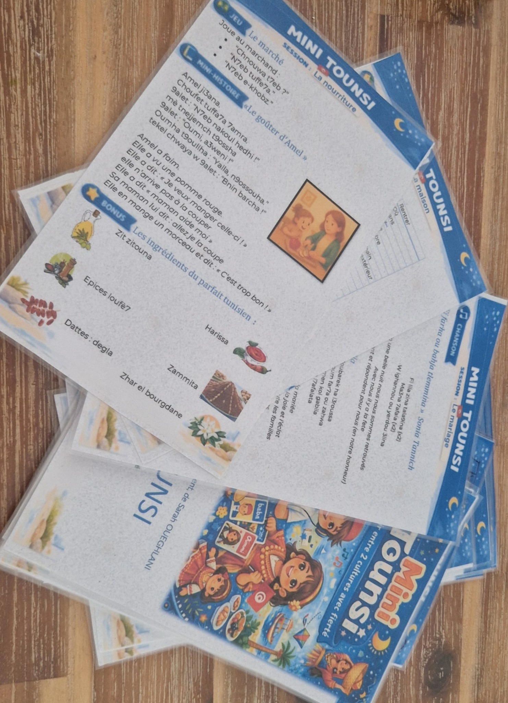
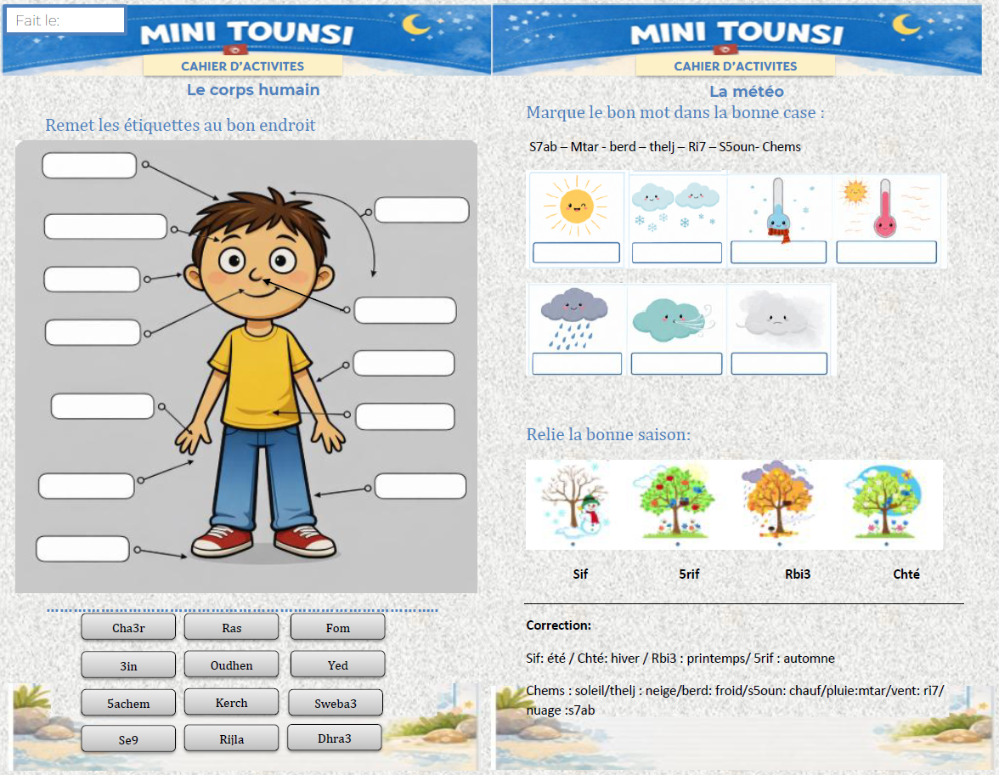
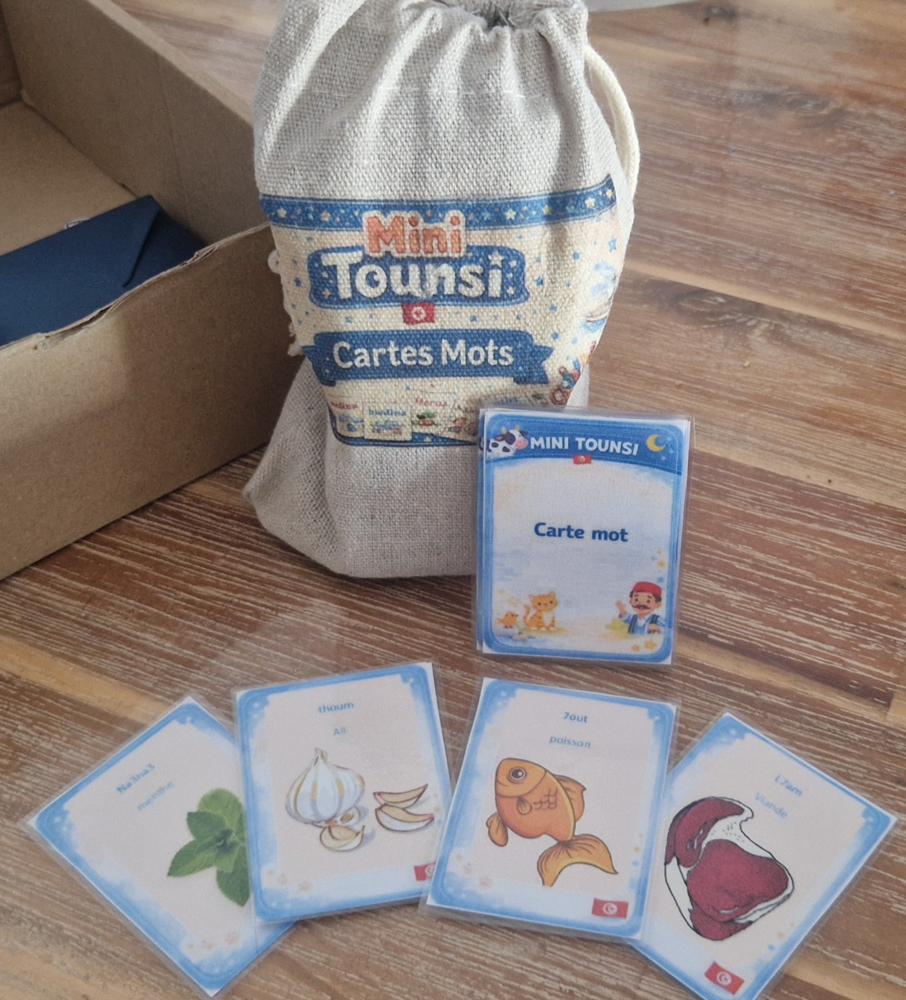
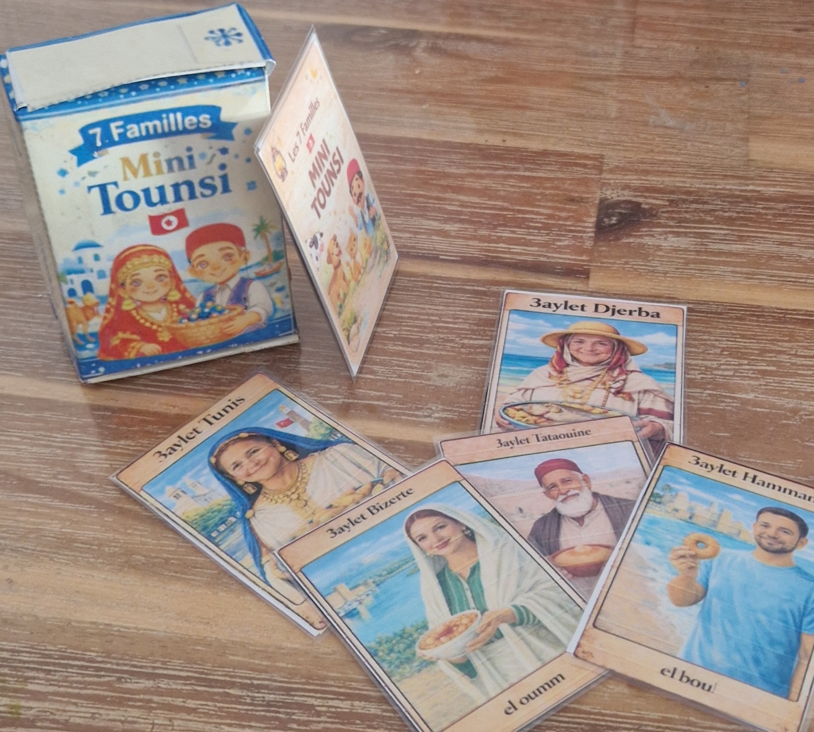
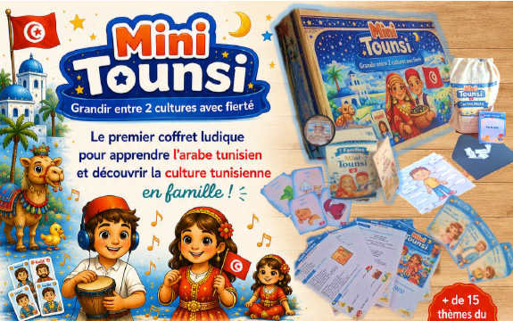
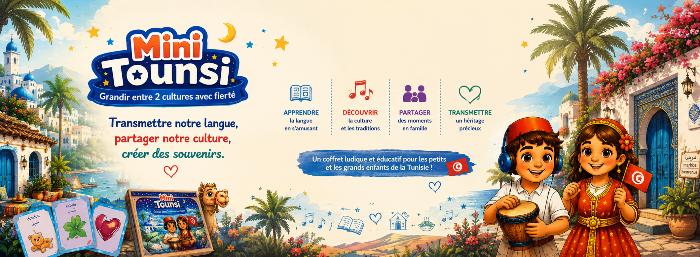
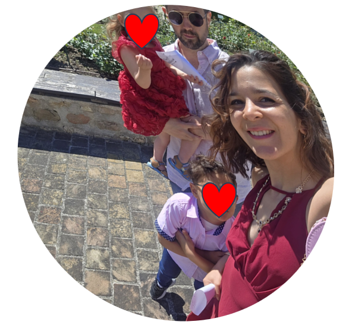

Accessible
Pas besoin de connaître l'alphabet arabe. Tout est écrit en lettres latines, avec des chiffres pour certains sons.
Un coffret pour tous les francophones qui souhaitent apprendre le dialecte tunisien, de façon simple et amusante.
Découvrir Mini Tounsi →En cours de fabrication

Comprendre quelques mots sans oser parler ? Vouloir transmettre le tunisien à ses enfants ? Comprendre enfin les conversations de sa belle-famille ?
Mini Tounsi est né de ces expériences. Une façon ludique de découvrir le dialecte tunisien et sa culture, sans avoir besoin de savoir lire ou écrire l'arabe.
Pour renouer avec une langue que l'on comprend parfois sans parvenir à la parler.
Pour transmettre le tunisien, les chansons, les traditions et la culture aux nouvelles générations.
Pour comprendre les conversations familiales, échanger avec ses proches et se sentir plus à l'aise en Tunisie.
Pour commencer à comprendre et parler le tunisien simplement, sans passer d'abord par l'apprentissage de l'arabe littéraire.
Mini Tounsi accompagne tous les francophones, enfant comme adulte, issu ou non de la diaspora dans l'apprentissage du dialecte tunisien. Une façon ludique de découvrir l'arabe tunisien, d'enrichir son vocabulaire et de parler tunisien au quotidien.
Vous souhaitez commencer dès maintenant ? Découvrez notre guide pour apprendre le tunisien →
Pas besoin de connaître l'alphabet arabe. Tout est écrit en lettres latines, avec des chiffres pour certains sons.
Jeux de rôle, mime, Jacques a dit, chasse aux objets, coloriage, devinettes, étiquettes à replacer...
Chansons, mini-histoires et situations du quotidien pour comprendre, mémoriser et oser parler.
Une langue, des traditions, des valeurs, un petit bout de Tunisie à avoir chez soi.
Prononciation, phonétique et chiffres.
Commencer →30 mots essentiels, corps humain, nourriture et route.
Découvrir →Pronoms, présent, négation et appartenance.
Apprendre →Chansons, jeux et transmission en famille.
Explorer →

35 fiches pédagogiques / sessions
Vocabulaire, histoires, chansons, dialogues, jeux et activités.
1 cahier d'activités
Coloriages, exercices, étiquettes, traditions, découpages et jeux.


250 cartes mots
Pour apprendre, mémoriser et réutiliser le vocabulaire du quotidien.
Le jeu des 7 familles — 42 cartes
Des familles inspirées des régions et de la culture tunisienne.

Pas besoin d'y passer des heures. Les activités sont pensées pour être courtes et faciles à reprendre : un jeu, une chanson, quelques cartes, une petite histoire… puis on réutilise naturellement les mots dans la vraie vie.

Mini Tounsi invite aussi à découvrir les chansons, la famille, les traditions, les recettes, les régions et les expressions qui font vivre la culture tunisienne.

Je m'appelle Sarah Oueghlani. Française par ma mère et tunisienne par mon père, j'ai grandi sans vraiment apprendre le tunisien.
Les supports que je trouvais étaient surtout en arabe littéraire, bien loin de la langue parlée à la maison. À 18 ans, j'ai commencé à me reconnecter à mes origines, puis j'ai appris le dialecte en écoutant, en chantant et en osant parler malgré mes erreurs.
En devenant maman, je voulais créer ce que j'aurais aimé avoir : un outil simple, ludique et vivant pour transmettre notre langue, notre culture et notre fierté.
Mini Tounsi ne s'est pas construit en quelques mois. Derrière le coffret, il y a près de 15 années d'apprentissage, d'essais, de frustrations, de voyages en Tunisie et de petites victoires.
J'ai commencé par apprendre l'arabe littéraire, avant de comprendre progressivement que ce que je voulais réellement, c'était parler le tunisien de ma famille. J'ai appris en écoutant, en voyageant, avec les chansons, au contact de Tunisiens et surtout en osant enfin parler, même imparfaitement.
Toutes les difficultés rencontrées pendant ce parcours ont ensuite influencé la façon dont j'ai imaginé Mini Tounsi : apprendre directement le dialecte parlé, acquérir du vocabulaire utile, écouter, jouer, répéter et surtout oser parler.
De mon premier voyage en Tunisie en 2011 au projet de fabrication en 2026, voici les étapes qui ont construit Mini Tounsi. 🇹🇳💙
À 18 ans, je découvre le pays d'origine de mon père. Je commence à apprendre l'arabe littéraire tous les soirs et je pars environ deux semaines, deux fois par an, dans ma famille en Tunisie. J'écoute les conversations et j'essaie de reconnaître les mots.
Je suis un cours par semaine à Dar Ettounsi, mais je reste essentiellement dans l'apprentissage de l'arabe littéraire. Il me manque toujours énormément de vocabulaire tunisien. En parallèle, j'écoute de plus en plus de chansons tunisiennes.
Le tunisien devient très présent dans mon quotidien. Au début, je comprends quelques mots mais je n'arrive pas vraiment à répondre. Jusqu'en 2017, je maîtrise surtout les bases.
Puis je décide d'oser répondre en tunisien, même imparfaitement. Petit à petit, ma compréhension progresse et j'arrive à tenir des conversations simples.
Un arrêt maladie lié à de gros problèmes de dos me donne du temps pour réfléchir à la transmission du tunisien à mes deux enfants, alors âgés de 6 ans et 1 an.
Je cherche des supports pour apprendre le dialecte tunisien aux enfants, mais je ne trouve rien qui corresponde vraiment à ce que je cherche : quelque chose de simple, ludique, familial et utilisable sans devoir apprendre à lire l'arabe.
Je commence alors à concevoir moi-même des activités d'apprentissage du tunisien, en m'appuyant sur mon propre parcours et sur les difficultés que j'avais rencontrées.
Après plusieurs mois de travail, le premier prototype Mini Tounsi voit le jour : jeux, cartes, chansons, histoires et activités commencent à prendre forme.
Mini Tounsi est testé dans la famille. J'observe ce qui fonctionne, ce que les enfants retiennent, ce qui les amuse et ce qui doit être amélioré.
Je contacte des éditeurs afin de faire connaître le projet et de lui donner une véritable existence. Les réponses sont négatives.
Plutôt que d'abandonner, je décide de chercher une autre voie.
Je contacte directement des fabricants et je lance une campagne Ulule. C'est également le début du partenariat avec Harissa Le Jeu.
Les premiers devis de fabrication nous confrontent à une réalité : dans sa version initiale, le coffret serait trop coûteux à produire et donc trop cher à vendre.
Nous choisissons alors de revoir le design et le format pour rendre Mini Tounsi plus accessible : le contenu est divisé en deux jeux, la boîte devient plus petite et plus légère, tout en conservant l'esprit pédagogique du projet.
Après plusieurs semaines de recherches et de comparaisons, nous choisissons enfin le fabricant et le designer qui accompagneront Mini Tounsi.
En parallèle, minitounsi.com voit le jour pour présenter le projet et permettre à chacun de suivre son évolution.
Le projet entre désormais dans une nouvelle phase : finalisation du design, validation du premier produit avant fabrication en serie.
Après plusieurs mois de recherches, d'échanges et de devis, le fabricant et le designer de Mini Tounsi sont désormais choisis. C'est une étape majeure du projet.
Les premiers devis définitifs ont toutefois montré que le coffret imaginé au départ ne pouvait pas être fabriqué au prix estimé lors de la campagne Ulule. Nous avons donc entièrement retravaillé le format afin de réduire les coûts : boîte plus petite et plus légère, moins de supports différents et organisation du contenu en deux jeux complémentaires.
Mini Tounsi sera donc proposé en deux jeux :
La campagne Ulule arrive à son terme sans avoir atteint son objectif de financement. Mais Mini Tounsi continue. La première fabrication sera financée autrement afin que le projet puisse voir le jour.
Prochaine étape : finaliser les fichiers avec le designer, valider la fabrication et lancer la première série.
Vous êtes professeur, école ou association ? Mini Tounsi peut devenir un véritable support pédagogique pour vos cours et ateliers. Contactez-nous pour les commandes destinées aux professionnels et aux structures éducatives.
Nous contacterLa première production de Mini Tounsi est en préparation. Laissez vos coordonnées pour être prévenu(e) dès l'ouverture des ventes.
🔒 Vos coordonnées seront uniquement utilisées pour vous informer concernant Mini Tounsi. Vous pourrez retirer votre consentement à tout moment.